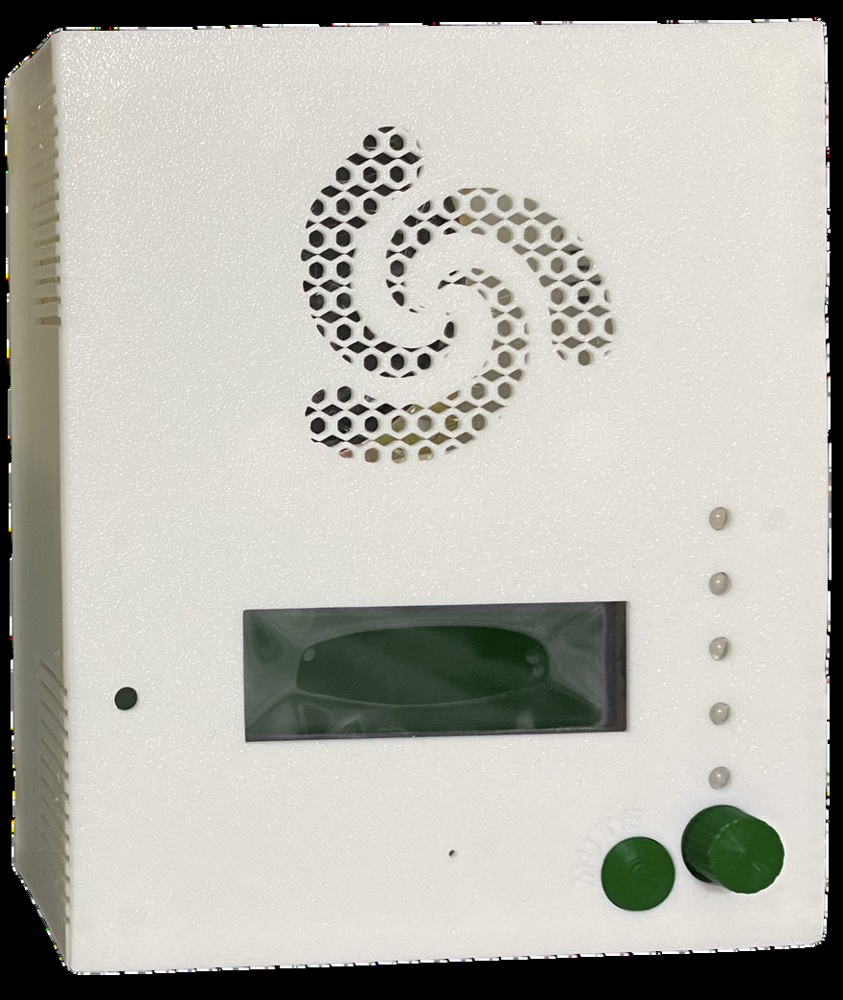
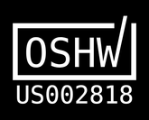
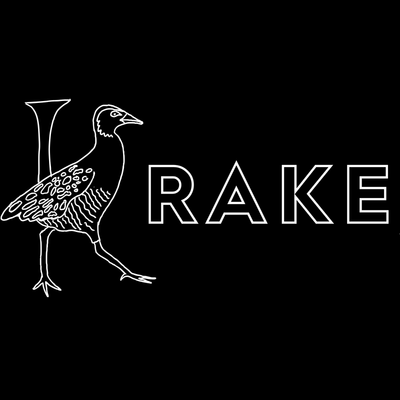
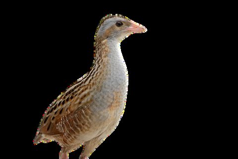
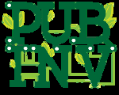

Multilingual audio
Custom speech and sounds via SD card.

A wireless alarm device purpose-built for life's critical moments
Based on the Public Invention General Purpose Alarm Device, Krake is a wireless alarm device. It flashes lights, plays audio files such as speech, music, and alarm sounds, and adds GPAD functionality with a rotary encoder.
Krake is an annunciator meant to alert a human to something needing attention. It has been developed primarily by volunteer Nagham Kheir, with oversight from volunteer invention coach Lee Erickson.

The hope was to develop the initial design for a wireless alarm device to alert nearby parties of a particular state.
We developed the name of this invention team based on a crake: a bird with a distinctive, slightly alarming cry.
We changed the spelling as a joke. “Flaycrake” is an old term for a scarecrow, which also aligned with our mission.


The male corn crake's advertising call is a loud, repetitive, grating “krek krek”.Custom speech and sounds via SD card.
Alerts over your local network or internet.
Steady or blinking, visible across a room.
Navigate settings without external device.
USB-C, barrel jack, or RJ12.
Silence audio instantly with one press.
AGPL firmware, CERN OHL hardware.
Works with medical data standards.
Alert an elderly person living alone to a fall or blood pressure drop, giving family peace of mind from anywhere.
For ventilators and critical devices, Krake provides a dedicated alarm channel for life-threatening mechanical failures.
Alert on-site staff when a server overheats, a UPS fails, or network connectivity drops.
A sensor, medical device, or network message triggers an alarm event.
Alert arrives wirelessly via MQTT over your local network or internet.
Lights flash, audio plays, and acknowledgement is sent back.

Krake is a Public Invention project developed entirely by volunteers. The hardware is licensed under CERN OHL and the firmware under AGPL 3.0. Fork it, improve it, build on it.
PubInv / krakeInvention Coach
Invention Coach
Public Inventor
Invention Coach
Public Inventor
Public Inventor
Public Inventor